-
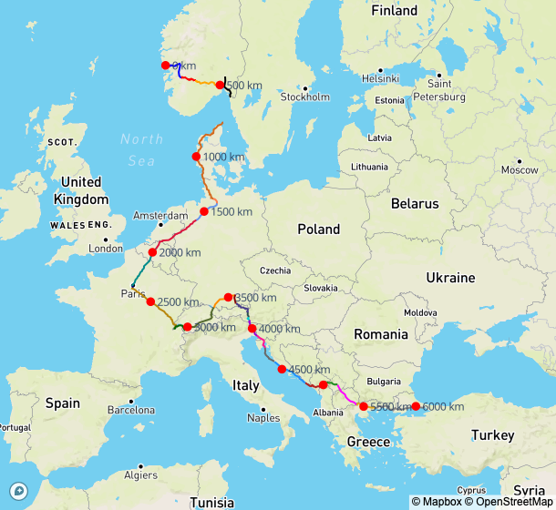
Europe
29 days, 20 countries
6079 km, 52118 hm
-
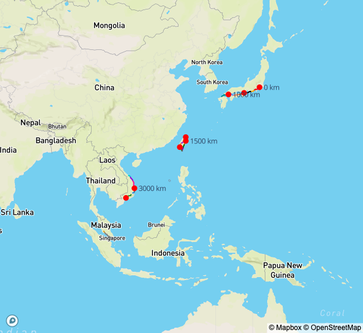
Asia
27 days, 5 countries
3986 km, 33977 hm
-
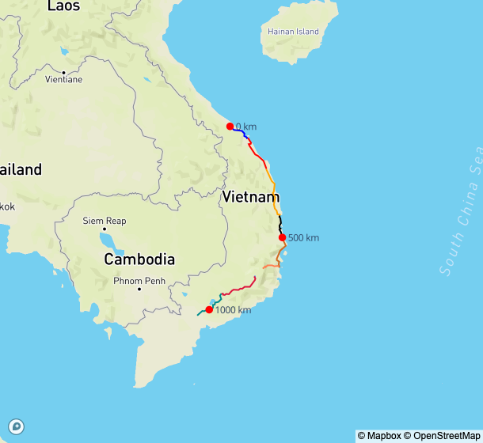
Vietnam
8 days, 1 country
1052 km, 6324 hm
-
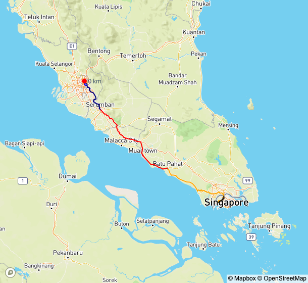
Singapore to KL
4 days, 2 countries
441 km, 2581 hm
-
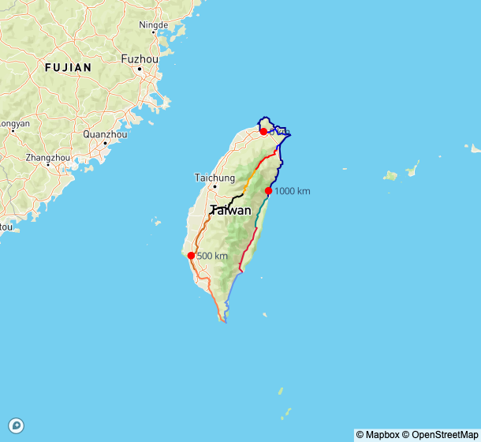
Taiwan
7 days, 1 country
1292 km, 15734 hm
-
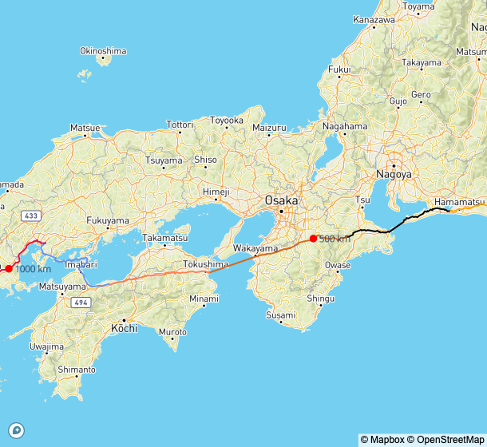
Japan
9 days, 1 country
1231 km, 9684 hm
-
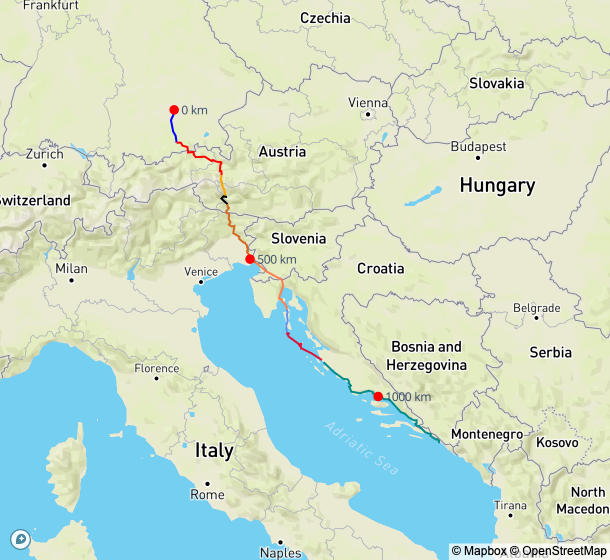
Munich to Dubrovnik
7 days, 6 countries
1198 km, 11756 hm
-
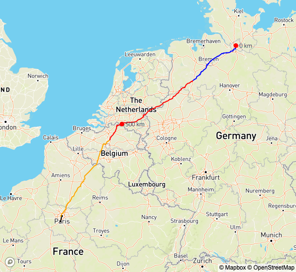
Hamburg to Paris
4 days, 4 countries
931 km, 3568 hm
-
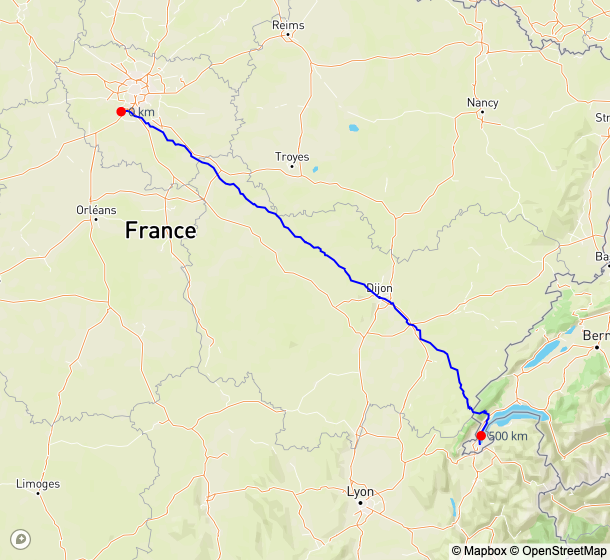
Paris to Geneva
1 days, 2 countries
509 km, 4533 hm
-
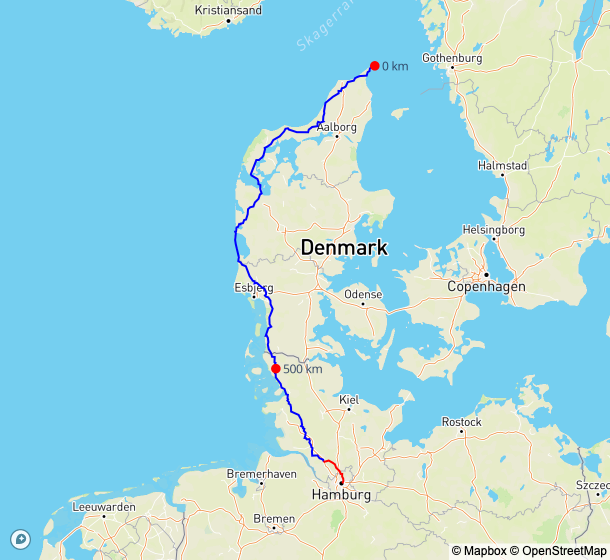
Hamburg to Skagen
2 days, 2 countries
701 km, 1991 hm
-
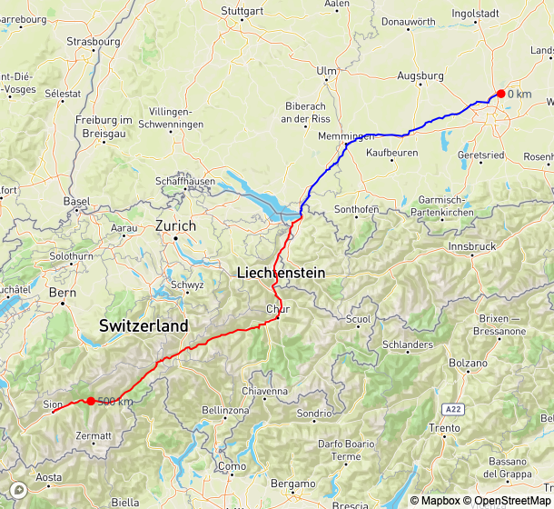
Sion to Munich
3 days, 4 countries
544 km, 4878 hm
-
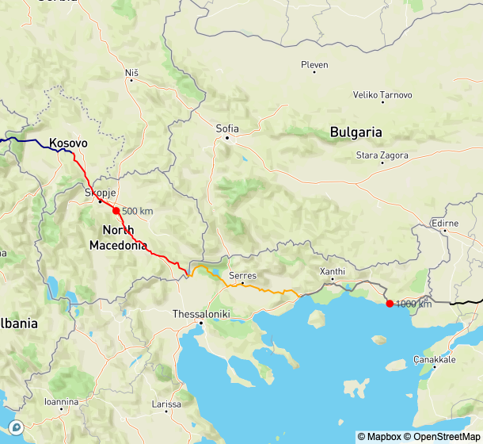
Dubrovnik to Istanbul
6 days, 7 countries
1312 km, 13016 hm